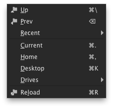
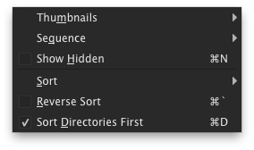
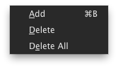

File Browser
The file browser dialog is used for loading and saving files. The user
interface of the file browser provides a number of specialized features for
working with images and file sequences.
This screenshot shows the file browser with the major user interface
components:
- The menu bar and tool bar provide access to the file browser actions
and options.
- The file view shows the contents of the current directory with
thumbnails and information about images and file sequences.
- The file selection shows the path and file name of the file selected
for loading or saving.
- The search box allows quick filtering of the file view contents.
Directory Menu
| | Name | Description | Shortcut |
|---|
|  |
 |
Up |
Go up a directory |
Ctrl+\ |
|
Prev |
Go to the previous directory |
Backspace |
|
Recent |
A list of recently used directories |
|
Current |
Go the the current directory |
Ctrl+. |
|
Home |
Go to your home directory |
Ctrl+, |
|
Desktop |
Go to your desktop directory |
Ctrl+K |
|
Drives |
A list of drives available to this computer |
 |
Reload |
Reload the current directory |
Ctrl+R |
Options Menu
| | Name | Description | Shortcut |
|---|
|  |
|
Thumbnails |
Set whether image thumbnails are displayed |
|
Sequence |
Set whether file sequencing is enabled |
|
Show Hidden | Set whether hidden files are shown |
Ctrl+N |
|
Sort |
Set how files are sorted |
|
Reverse Sort |
Reverse the sorting direction |
Ctrl+` |
|
Sort Directories First |
Set whether directories are shown before files |
Ctrl+D |
Bookmarks Menu
| | Name | Description | Shortcut |
|---|
|  |
|
Add |
Add a bookmark |
Ctrl+B |
|
Delete |
Delete bookmarks |
|
Delete All |
Delete all bookmarks |
Preferences
The file browser preferences allow you to set the default behavior and
options. The file browser preferences are in the preferences dialog available
from either the file or application menu.
|